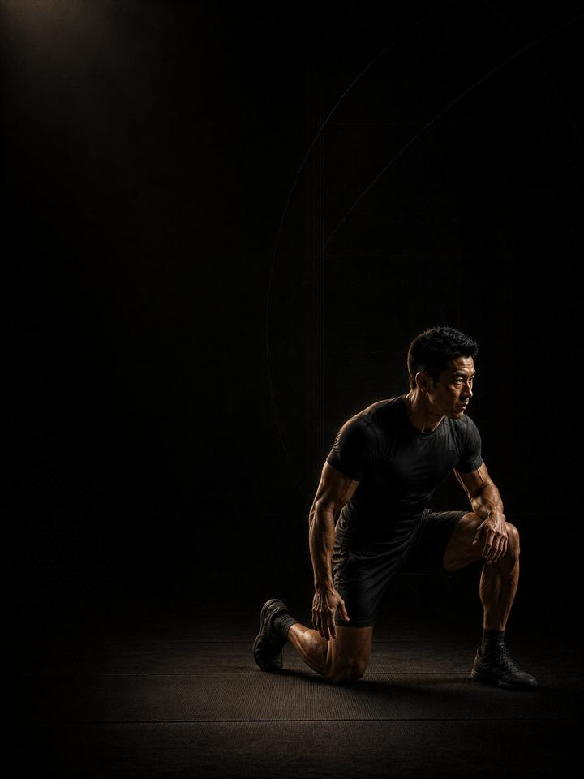

Grappling · Restore
Let the neck, shoulders and joints recover after the season, then rebuild the athlete underneath them.
- Built forBJJ, wrestling and MMA athletes after their competition season
- Training days3 non-consecutive gym days a week, with a 2-day short version
- Session length48–60 minutes
- Equipmentfull gym, including machines, a pull-up bar and a towel
- Formatmobile PDF, every exercise linked to a demo video
- Get all four blocks of this sport family for 119.990 KD (159.960 KD if bought separately).
- Upgrade to 1:1 coaching within 30 days and this price comes off your first month.
The store opens soon. For now, Buy opens an Instagram message and you receive the PDF there.
Who it's for
Grapplers coming off a season. A season of grappling leaves a specific bill: a neck that has been loaded from every angle, shoulders that have been cranked, fingers that will not straighten in the morning, and joints that ache without a diagnosis. None of it gets a chance to settle while you are training, because the mat never stops asking.
This block is that chance. It opens with four weeks of no mat contact and no neck loading at all, while the rest of the body trains normally. Then it rebuilds, with contact and neck work brought back gradually. The aim is not to be in shape at the end. The aim is to start next year on a body that has actually recovered.
Where it sits in the year: Block 4 of 4. Base, Build, Compete, Restore, then back to Base. Run it straight after your competition, not three months later.
Take two weeks off the mat first. Fully off: no rolling, no drilling, no "just light technique". It is the most valuable part of the block and the one most often skipped.
Your week
Three non-consecutive gym days with no mat pressure. Sessions are longer than in camp, at much lower intensity.
Off-season, 3 gym days
| Sun | Mon | Tue | Wed | Thu | Fri | Sat |
|---|---|---|---|---|---|---|
| Day 1 | Rest | Day 2 | Rest | Day 3 | Rest | Rest |
Short version, 2 gym days
| Sun | Mon | Tue | Wed | Thu | Fri | Sat |
|---|---|---|---|---|---|---|
| Day 1 | Rest | Rest | Day 2 | Rest | Rest | Rest |
Every session runs the same way:
- Warm-up, 8–10 min. The same sequence each time. Glutes, hips and shoulders switched on.
- Speed and power, 12–15 min, in the phases that include it. Full recovery between sets.
- Strength, 20–25 min. The main lifts, with two to three minutes between sets.
- Tissue work, 8–10 min. Last, and never cut.
Fix the thing you trained around. Every grappler has one. Run the matching AXIS corrective program alongside phases 1 and 2. The neck, shoulder or elbow program will do more for next season than another month of rolling.
How the 12 weeks progress
Three phases of four weeks each. Grappling loads tissue like almost nothing else does: long isometric holds, joints taken to end range by another person, and a neck that absorbs force from every direction. Tendon, joint capsule and disc adapt on a much slower clock than muscle, and they only remodel when the demand genuinely drops. A season gives no such window, so this block builds one, then rebuilds strength on top. Volume climbs first, load second, neck and contact last.
| Weeks 1–4 | Weeks 5–8 | Weeks 9–12 | |
|---|---|---|---|
| Phase | Tissue repair | Hypertrophy | Maximal strength |
| Goal | Let neck and joint tissue recover. Machines, controlled ranges, higher reps, nothing that loads the neck or the joints at end range. | Build muscle away from the mat. Free weights and grip work return. | Rebuild maximal strength and neck tolerance. Loads climb, grip work extends, neck work returns to a normal dose. |
| Working sets per week | 54 | 62 | 65 |
| Average effort | RPE 6.1, about 4 reps in reserve | RPE 7.0, about 3 reps in reserve | RPE 7.9, about 2 reps in reserve |
| Landings per week | 60 | 60 | 60 |
| Throws per week | 0 | 0 | 20 |
RPE is a 1–10 rating of how hard a set feels. Reps in reserve is how many more good reps you could have done, so about 2 means 2 reps left in the tank.
Phase 1 should feel almost too easy. That is the prescription. Phase 2 is the muscle-building phase of your year. By week 12 you can start Grappling Base without a run-in.
Deload weeks: weeks 6 and 12 are lighter. Week 12 should leave you ready to start Block 1, not needing another break.
The rules that make it work
- Two weeks completely off the mat. No rolling, no drilling, no light technique. It is the cheapest performance tool in the sport.
- Phase 1 loads no neck at all. Not light isometrics, not careful bridging. None, for four weeks. The neck has the least recovery time in the sport and the highest cost if you get it wrong.
- Volume before load, load before contact. Reps climb first, then weight, then neck and contact work. Reversing that is how off-seasons produce injuries the next season inherits.
- Fix the thing you trained around all year. Neck, shoulder, elbow or low back: pick one and run the matching AXIS corrective program alongside phases 1 and 2.
- Any neck symptom is a question for a clinician, not a training question. Pain, dizziness, or numbness or weakness into the arm means stop and get assessed. Do not train through it and do not test it.
- Use a jump number as a fatigue test. Three standing broad jumps at the start of Day 1 each week, best one kept. More than 10% below your own rolling average means reduce that day: drop the power work and one set from each lift.
Terms
- Training year (macrocycle): four blocks in order (Base, Build, Compete, Restore), about 48 weeks.
- Block: 12 weeks. This program. One block develops one set of qualities to a set standard.
- Phase (mesocycle): 4 weeks. Each one targets one quality. Four weeks is a choice, not a rule. The length follows the goal.
- Training week (microcycle): where effort climbs, sets are added and the deload lands.
How you'll measure progress
Success in this block is measured in what stopped hurting, not in what you lifted. The weekly broad jump tracks fatigue alongside it.
What good progress looks like
- Weeks 1–4: things stop hurting. Fingers loosen, the neck settles and you sleep better. Training feels easy because it is meant to.
- Weeks 5–8: muscle and general strength come back quickly, and the shoulder numbers climb.
- Weeks 9–12: contact and neck work return on tissue that has had time to repair.
Respect the week
Count everything: sport training, gym and sleep. Sudden jumps in weekly workload are the most reliable predictor of injury in amateur sport. Protect 7–9 hours of sleep. It is the most powerful performance tool you have, and the cheapest.
The science
Every program in the library is built on published research, and how strong that research is gets stated, not implied. Where the evidence is limited, the page says so.
| Finding | Source | What it does not show |
|---|---|---|
| Strength training cuts sports injuries to under a third of the control rate. Stretching does not reduce them. | Lauersen, Bertelsen & Andersen, British Journal of Sports Medicine 2014. Meta-analysis of 25 randomised controlled trials, 26,610 participants. PMID 24100287 | Risk ratio 0.32 for strength training and 0.96 for stretching. The trials varied a lot, and dose was not standardised. |
| Programs that include the Nordic hamstring exercise roughly halve hamstring injuries. | van Dyk, Behan & Whiteley, British Journal of Sports Medicine 2019. Meta-analysis, 15 studies, 8,459 athletes. PMID 30808663 | Risk ratio 0.49, or 0.55 with the eight high-risk-of-bias studies removed. It measures programs that include the exercise, not the exercise alone. |
| One adductor exercise, three times a week in pre-season and once a week in season, cut reported groin problems by 41%. | Harøy et al., British Journal of Sports Medicine 2019. Cluster-randomised controlled trial, 35 teams, 652 male footballers. PMID 29891614 | Odds ratio 0.59. Self-reported problems in semi-professional men's football only. It has not been repeated in women or in other sports. |
| Every sensible prescription beats not training. Heavier loads rank highest for strength. Multiple sets rank highest for muscle size. | Currier, McLeod, Banfield et al., British Journal of Sports Medicine 2023. Network meta-analysis, 178 strength and 119 hypertrophy studies. PMID 37414459 | The differences between prescriptions were small, and all of them worked. |
What's next
After 12 weeks:
- Start the next year: Grappling · Base
- Neck still talking: Neck Pain
- Shoulder still talking: Shoulder & Scapular
- Elbow still talking: Elbow & Wrist Pain
Want it built around you? One-to-one coaching through the Trainerize app: programming shaped by your goal, schedule and history, video review of your technique, and weekly adjustments. Seats are limited. DM @a_bouzubar with "COACHING".
Before you buy: get cleared first if
- You have chest pain, unusual breathlessness, palpitations or dizziness with exertion.
- You have uncontrolled high blood pressure, a known heart condition, or recent surgery.
- You are pregnant or recently post-partum. Get clearance and a tailored program first.
- You have sharp joint pain in one spot that won't settle. Start with the matching AXIS corrective program.
This program is general fitness guidance. It does not replace a medical assessment.
- Get all four blocks of this sport family for 119.990 KD (159.960 KD if bought separately).
- Upgrade to 1:1 coaching within 30 days and this price comes off your first month.
The store opens soon. For now, Buy opens an Instagram message and you receive the PDF there.